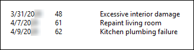
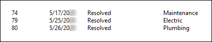

Source: https://rmxhelp.rentmanager.com/Topics/Express/Other/Scripts/Function-List.htm
List Function (Script)
This function displays a list of service issues linked to the selected property, tenant, prospect, or unit within a specified date range. This function creates a separate line for each issue and displays, by default, the Open Date, Issue ID, and Title separated by tabs. Additional variables are available to display in each line.
The default output of the function displays below. The Format parameter can be used to customize this output, as shown in the last example in this topic.

The class that utilizes this function and the location where the scripting information is pulled from in Rent Manager can be found in the table below.
| Class | Syntax |
|---|---|
|
[Class().ServiceManager().List()] Displays information found on the Issue details page or Issues list page. |
Parameters
Parameters change what the function examines and/or how it displays results. The parameters available to this function are indicated below and must be specified in the order listed in the following syntax. Required parameters must be assigned values for the function to work. For Optional parameters, if no value is provided in the script, Rent Manager uses default values.
[List("FromDate","ToDate","IsClosed","Format")]
FromDate
Specify the date on or after which to examine service issues opened. If no date is specified, the function uses the beginning of time.
[List("1/1/2026")]
Displays service issues of the selected entity opened on or after January 1, 2026.
ToDate
Specify the date on or before which to examine service issues opened. If no date is specified, the function uses the end of time.
[List("","12/31/2026")]
Displays service issues of the selected entity from the beginning of time to December 31, 2026.
IsClosed
Specify True to examine only closed service issues. Specify False to examine only open service issues. Leave this parameter blank to examine both closed and open service issues.
[List("9/1/2026","","True")]
Displays service issues of the selected entity closed on or after September 1, 2026.
Format
List details of each issue using a special format sequence.
Use \t to insert a tab.
Use \n to insert a new line.
Default Format
If no custom format is specified, Rent Manager's default formatting displays a list of the dates, ID numbers, and issue titles, separated by tabs:
"\t$_Date\t$_IssueID\t$_Title\n"
Variables
The following variables may be used in the Format parameter. Their values are pulled from the details page for service issues, or the Service Manager Issues page.
| Variable | Description |
|---|---|
|
$_AssignedClosedDate |
Displays the date currently in the Close Date field of the selected service issue. This can be the close date most recently entered by the user or the original close date (if the user has not changed the date). |
|
$_AssignedTo |
Displays the active Rent Manager user assigned to the service issue. |
|
$_Category |
Displays the Category created to help you sort and track service issues. |
|
$_ClosedDate |
Displays the date on which the Close Date box was initially checked on the selected service issue and the issue was saved. |
|
$_CreateDate |
Displays the date on which the selected service issue was created and first saved. |
|
$_Date |
Displays the Open Date of the service issue. |
|
$_Description |
Displays the text in the Description field on the Service Manager Issue details page. |
|
$_DueDate |
Displays the Due Date of the service issue. |
|
$_Hours |
Displays the number of Hours spent on the service issue. |
|
$_IsClosed |
Displays True if the issue is closed or False if the issue is still open. |
|
$_IsRead |
Displays True if the issue has been read or False if the issue has not been read. |
|
$_IssueID |
Displays the Issue ID of the service issue. |
|
$_Priority |
Displays Priority assigned to the service issue. |
|
$_Resolution |
Displays the text in the Resolution field on the Service Manager Issue details page. |
|
$_Status |
Displays the condition that describes the current progress of the service issue. |
|
$_Title |
Displays the brief summary in the Title field on the Service Manager Issue details page. |
|
$_UpdateDate |
Displays the date the selected service issue was most recently updated (saved). |
List("","","","\t$_Title\t$_Date\t$_Status\n")]
Displays a customized list of the issue title, date, and status of the service issues.
Script Examples
The following scripts show various ways the function can be used:
[Tenant().ServiceManager().List()]
Displays a list of the date, issue ID, and title of all open and closed service issues linked to the selected tenant.
[Unit().ServiceManager().List("01/01/2026","12/31/2026","True")]
Displays a list of the date, issue ID, and title of closed service issues that were opened on or after 1/1/2026 and closed on or before 12/31/2026 that are linked to the selected unit.
[Prospect().ServiceManager().List("", "", "True", "\t$_IssueID\t$_Date\t$_Status\t$_Category\n")]
Displays a customized list of the issue ID, date, status, and category of all closed service issues linked to the selected prospect.
The output displays as shown below:
